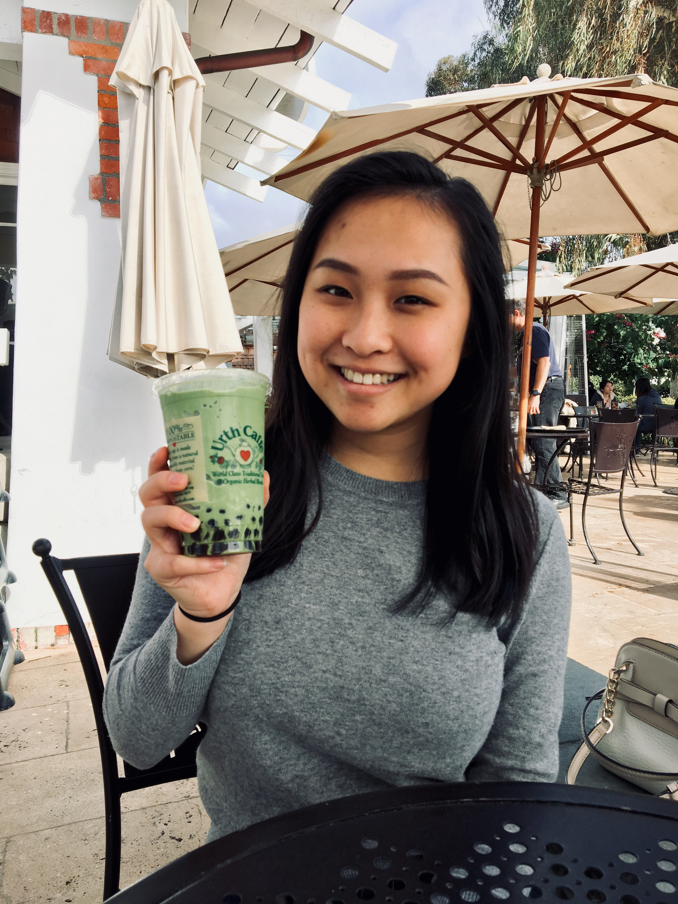
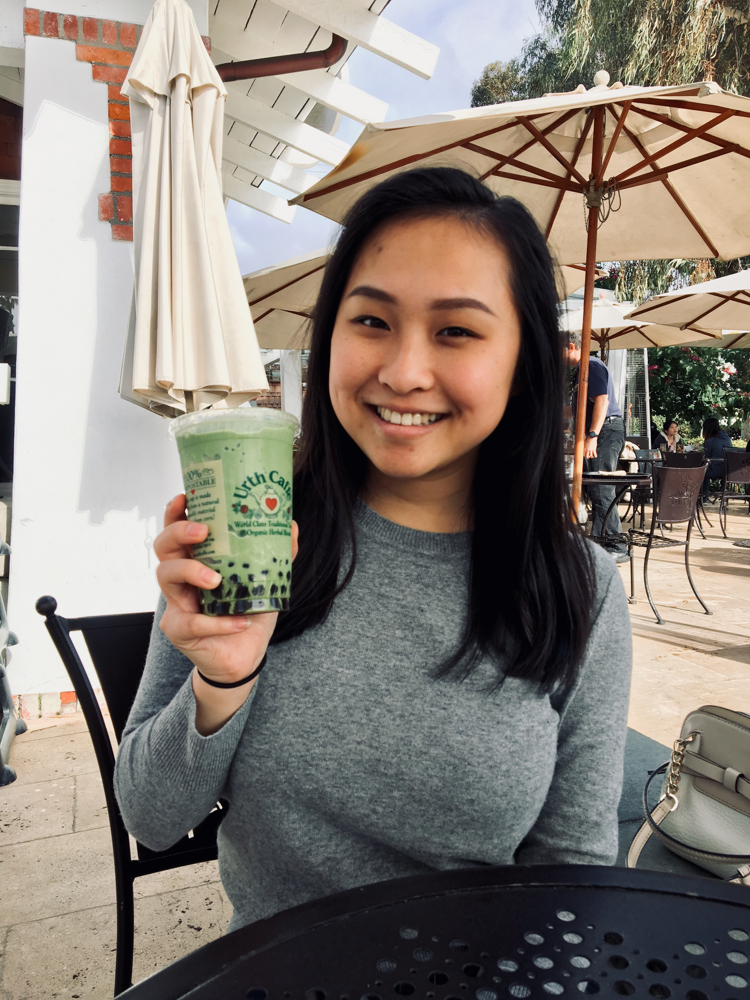

ERIN LIU
I'm a junior at UC Berkeley studying Data Science with a concentration in Business Analytics.
Currently learning and doing front-end development and data at Queenly. Come check us out!
 

- Bay Area born and raised, but hope to work in NYC or Shenzhen some day.
- Interested in intersecting data, product, and software in retail tech!
- Came into college undecided, but pursued Data Science in my 3rd semester.
- Intending to study abroad at the National University of Singapore this fall.
- A huge foodie and coffee enthusiast. Send me your recommendations!
- Former rhythmic gymnast and dancer. I hope to watch the Tokyo Olympics in person.
- And finally - so excited to join New Relic this summer as a SWE Intern!